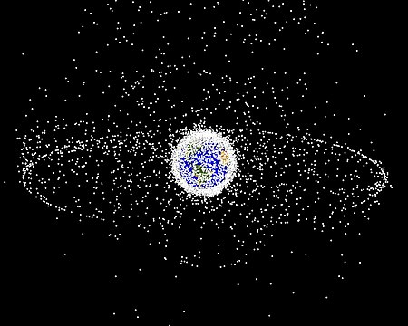
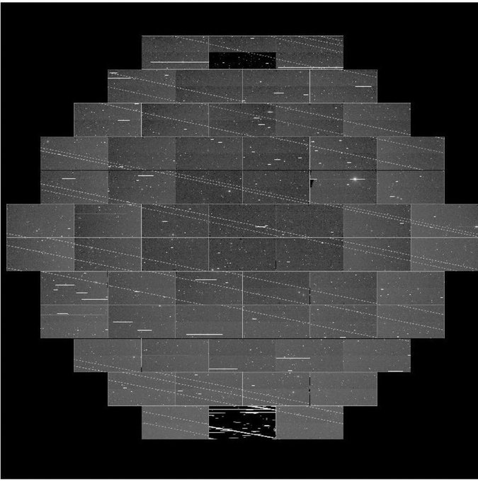

Thats right. The aim of starlink is to have a global coverage of the planet and provide everyone with internet. Or almost everywhere. This might be the best options for people who live in remote places where they havent build poles or underground wires. The satellites will be so low as to provide the fastest possible connection. So low in fact that you could see them in the night sky floating, or falling, across the sky.
Now you might be thinking that this is a good thing, or thinking that about potential problems. And there are both good and bad things about this. The good has already been covered. But what are the bad things?
Have you ever heard of space debris ,space junk, space waste or space trash ? These are objects in orbit. And most of them serve no function. They are in the way of new launches into space. heres a picture
Now there are plans on how to deal with this problem. Starlink will have their satellites push themselves with thrust out of orbit and await from earth. But if it fails the satellite will fall to earth and burn up in the atmosphere. A satellite has a lifespan of roughly 4 years. Then they will become space junk.
Starlink aims to have a 12,000-satellite megaconstellation in orbit. And there is romers that they are aiming for more. All of these satellites are going to leav marks on the sky.
This was just as the satellites were being deployed on was pushed further out into orbit. But with 12.000 satellites there are concerns that they wil one day block the observation of something important or critical
They will weigh roughly 260 kg per unit. And their design is made so that they can be launched in tight clusters to minimize the amount of launchs needed. Four powerful antennas will be mounted on the satellites and will be one of the reasons why can boast about the speed of the internet they can provide. They will all be mounted with a single solar panel. These are stadard for allmost all satellites. They are simple to instal and improves the overall life and efficiency of the satellite
For propulsion the satellites will use an ion thruster powered by krypton. No, not the home planet of Superman. Its a noble gas. Ion thrusters are made to function in near vacuum conditions and thats why satellites in the Starlink project will use them. Each satellite will be equipped with a star tracker. This will make sure that they stay in orbit and in the correct hight and position to provide the high speed connection
The satellites will be equipped with autonomous collision avoidance systems. The will have a link directly to and working with the Department of Defense's debris tracking system. They will use this system and the ion proupolsers to avoid other satellites and space junk. So with less collisions there will be less space junk. And as you have already read the satellites from starlink will, at the end of the life cycle, thrust themselves out of orbit or fall and burn in the atmosphere. But what if something goes wrong ?
We have already talked about space junk. and Starlink aims to make sure that their satellites does not become part of the problem. But there is a chance that a handful of the 12.000 satellites fail or collide with something and then does not leav the orbit or burn in the atmosphere. Some satellites will take many years, many hundreds of them, to leave orbit or fall and burn. So if one percent of the Starlink satellites fail and stays in orbit for a hundred years, thats 120 new space junks added to the night sky that one day might block a signal or observation.